Click a highlighted definition to read it here without losing your place. Follow section numbers alongside the original PDF.
Chapter cheat sheet
The main idea: Treat the heap as a graph: sharing explains updates, and reachability explains safe garbage collection.
| Key term | Concise meaning |
|---|---|
| Record | Maps field names to locations, allowing each field to be updated. |
| Pointer | A location stored as a first-class value. |
| Aliasing | Two paths reach the same mutable cell. |
| Root | A live reference from the current computation from which tracing begins. |
| Mark and sweep | Mark cells reachable from roots, then reclaim unmarked cells. |
Rule to remember: Reachable = roots plus every cell transitively reachable through values, records, and closure environments.
Small example: If a.v and b.v point to the same cell, setting b.v to 8 makes a.v read 8 too.
How to solve problems:
- Draw variable cells and their outgoing pointers.
- Follow the exact path affected by an assignment.
- Collect all live roots, including temporary values and pending computation.
- Trace with a visited set; reclaim only unmarked cells.
Common trap: Leaving scope does not imply garbage. Reachability conservatively retains cells; it does not predict whether each cell will actually be used again.
Read the chapter in the original PDF · Continue to the detailed sections
Syntax and code companion
Use the syntax reference to trace a symbol to its meaning and source. Related cheat sheets: Lecture 9.
Records and field locations · Locations and memory · Reachability and fixed points
Line-by-line code · Shared mutable record fields
Complete OCaml teaching example; the course interpreter represents field locations explicitly
type counter = { mutable count : int }Declare a mutable integer field.
let original = { count = 0 }Allocate one record.
let alias = originalRefer to the same record; do not deep-copy it.
let () = alias.count <- 7Update the field through alias. OCaml record assignment uses <-.
let observed = original.countRead the shared field through original.
Trace result: observed = 7. In HW3's model, both records lead to the same field location.
Before you begin
Read in the PDF: Chapter 7, pp. 193–221. Goal: follow the heap graph and conservatively retain reachable cells; reachability does not predict exactly which cells will be used again. Definitions: record, store, garbage collection.
7.1 Records
A record value maps field names to locations. Each field therefore has its own mutable cell. Selecting a field first evaluates the record, finds the field location, and reads the current store. Updating a field changes that cell. Copying the record value preserves its field locations, so copies can share mutable fields.

View Mermaid source
flowchart TD
accTitle: Chapter 7 - two record values share a field cell
accDescr: Separate variable cells hold records whose v fields both point to the same location, so a field update is visible through either name.
A["Variable a"] --> LA["Variable cell LA"]
B["Variable b"] --> LB["Variable cell LB"]
LA --> RA["Record: v maps to LV"]
LB --> RB["Record: v maps to LV"]
RA --> V["Field cell LV: initially 1, then 8"]
RB --> V
Trace: create a record a, bind b to a's value, then set b.v to 8. Reading a.v gives 8. Reassigning the whole variable b would change b's variable cell; it would not automatically change a's variable cell. Field assignment and variable assignment follow different arrows.
7.2 Pointers
A pointer is a first-class location value. &x returns the location already associated with x. new e allocates a new cell initialized by e. Dereferencing reads the pointed-to cell; pointer assignment updates it. A pointer variable itself has a cell that contains the pointer, so distinguish the variable's location from the location stored inside it.
For let x = 1 in let p = &x in *p := 7; x, p's contents point to x's cell. The assignment updates that cell, and the final result is 7. Returning the address of a parameter is valid under this chapter's heap model while that cell remains reachable; automatically freeing every parameter cell on return would be incorrect.
The prose includes taking a field's address, but the §7.4 supplied AST has only ADDROF of var. The solution follows the listed AST. Adding field-address syntax would reuse the field-location lookup already used by FIELDASSIGN.
7.3 Memory Management
Allocation grows the store. The question is which cells can be reclaimed without changing program behavior. Scope alone is insufficient: a pointer or closure can keep a cell accessible after the binding that created it has gone out of scope.
7.3.1 Manual Memory Reclamation
Manual deallocation makes the program responsible for deciding when a cell is no longer needed. Reclaiming too soon creates a dangling reference; reclaiming the same cell twice is another error; never reclaiming inaccessible cells wastes memory. Aliasing makes the decision harder because one name disappearing does not establish that no other reference remains.
7.3.2 Automatic Memory Recycling
Garbage collection uses a conservative, computable approximation to “will be used again”: retain all cells reachable from the roots. Start from environment locations. Follow location values, record-field locations, and environments captured by closures. Continue until no new locations are found. Sweep cells outside the resulting set.

View Mermaid source
flowchart TD
accTitle: Chapter 7 - mark a heap graph without looping on cycles
accDescr: A worklist starts at roots; unseen cells are marked before following pointers, record fields, and closure environments.
A["Worklist = root locations; marked = empty"] --> B{"Worklist empty?"}
B -->|Yes| C["Keep only marked store entries"]
B -->|No| D["Remove location l"]
D --> E{"Already marked?"}
E -->|Yes| B
E -->|No| F["Mark l before following edges"]
F --> G["Add pointer, record, and closure locations"]
G --> B
Worked heap: roots contain location 0; cell 0 points to 1; cell 1 points to 0; cell 2 contains an unrelated integer. The reachable set is {0,1}. Marking before traversing prevents the cycle from looping forever. Cell 2 is removed. Reference counting alone would have difficulty reclaiming an unreachable cycle; tracing collection can reclaim it when it has no path from a root.
Reachability includes pending computation, not just the environment of the expression currently executing. The book limits collection to points with no remaining continuation when it roots only in the current environment. Collecting during an arbitrary nested call could delete a value the caller still needs.
7.4 Implementation
Read in the PDF: pp. 219–221. Download all four worked tasks.
Task 1 — Define values, environment, and memory
Use integers, booleans, pointers, records, and closures as values. In implicit mode, an environment maps names to locations. Represent the store as a finite association list plus a monotonically increasing fresh-location counter. Unlike a plain function loc -> value, this representation lets the collector enumerate allocated cells for sweeping. Updating removes the previous mapping for the same location.
Task 2 — Implement the evaluator
Use the Chapter 6 state-threading pattern for every constructor. Record construction evaluates both initializers in order, allocates their cells, and returns a field map. FIELD and DEREF read cells. FIELDASSIGN and STORE update them. Procedure calls retain lexical scope and the current store.
Source discrepancy: p. 220 prints eval : program -> env -> mem -> mem. The language's expression rules need both the value and updated memory internally. The solution therefore uses eval ... -> value * mem and provides eval_memory as an adapter with the printed memory-only result. Throwing away intermediate values inside the recursive evaluator would make arithmetic and field access impossible.
Task 3 — Implement gc
Compute the transitive closure of all root locations, then filter the store. The solution follows pointers, record fields, ordinary closures, and recursive closures. An already-marked set terminates cycles. Its list-based implementation favors readability; hash sets or balanced trees improve large-heap performance. It conservatively includes shadowed environment entries, which can retain extra cells but cannot free a live one.
Task 4 — Integrate gc safely
The executable solution threads a flag meaning no outer computation remains. It begins true for the whole run. Conditions, operands, initializers, and call arguments run with it false. A final branch, let body, sequence's second expression, or call body inherits the outer flag. Collection happens only on entry when that flag is true. With run ~collect:true Implicit e, this implements the textbook's restricted safe-point policy.

View Mermaid source
flowchart TD
accTitle: Chapter 7 - decide whether environment-only collection is safe
accDescr: A global continuation condition is stricter than being locally the last expression of a function.
A["About to evaluate an expression"] --> B{"Any surrounding work still pending?"}
B -->|Yes| C["Skip environment-only GC"]
B -->|No| D["Mark from current environment and sweep"]
C --> E["Evaluate with the current store"]
D --> E
Why the restriction matters: in f 0 + !p, the caller still needs p after f returns. Inside f, p may be absent from the callee environment. The implementation must not collect p there. Its regression test checks this exact kind of pending-work case, and compares collection-enabled results with ordinary evaluation.
For more frequent collection, explicitly represent all continuation frames and root their environments and temporary values too. That is a larger machine than the textbook task asks for.
Homework connection: HW3 record and memory reasoning. Next: Chapter 8.